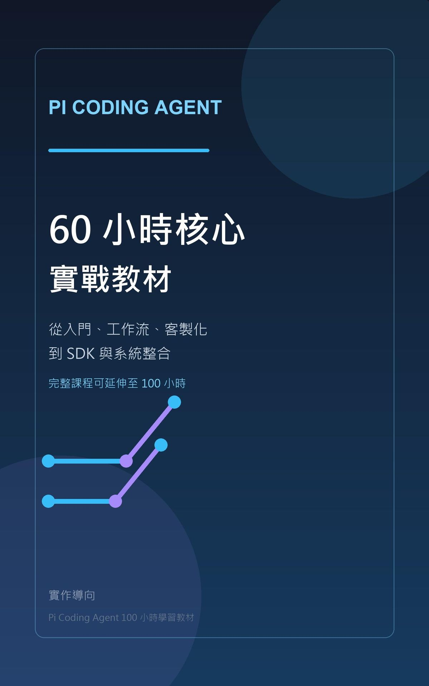

電子書
Pi Coding Agent 60 小時實戰教材
《Pi Coding Agent 60 小時實戰教材》帶讀者從 Pi Coding Agent 基礎使用一 路學到工作流客製化、Extensions 開發，以及 SDK、RPC、JSON 系統整合

Pi Coding Agent 60 小時實戰教材
《Pi Coding Agent 60 小時實戰教材》帶讀者從 Pi Coding Agent 基礎使用一 路學到工作流客製化、Extensions 開發，以及 SDK、RPC、JSON 系統整合
《Pi Coding Agent 60 小時實戰教材》帶讀者從 Pi Coding Agent 基礎使用一 路學到工作流客製化、Extensions 開發，以及 SDK、RPC、JSON 系統整合。 本書核心內容約 60 小時可完成；若包含完整作業、講師授課、團隊實驗與延伸專題，完整課程規模約 80～100 小時。 內容包含： - 安裝、登入、模型選擇與專案分析 - Session、AGENTS.md 與安全工作流 - Prompt Templates、Skills 與 Themes - TypeScript Extensions 開發 - SDK、RPC 與 JSON mode 整合